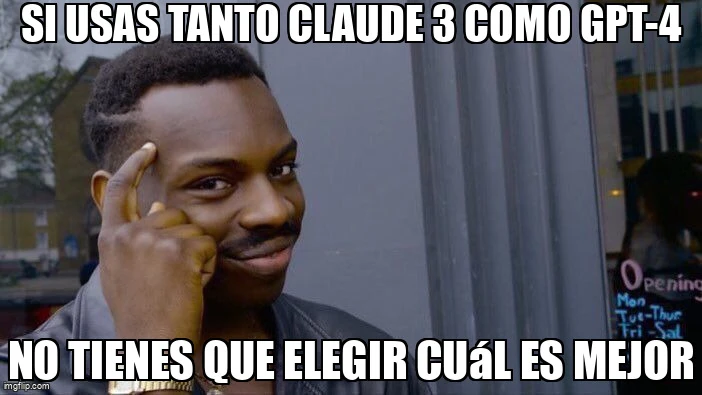

estrategIA #24 ·
La alternativa a elegir un campeón
El contexto
Frente a la pregunta por el mejor modelo, el gesto de señalarse la sien propone una salida práctica: trabajar con ambos. La pieza acompañaba una comparación de Claude 3 y GPT-4 para usos políticos y gubernamentales.
Publicado en: estrategIA #24 Evaluando los modelos más avanzados de inteligencia artificial para la política y el gobierno: Claude 3 vs GPT-4
Leer el texto de la imagen
SI USAS TANTO CLAUDE 3 COMO GPT-4 NO TIENES QUE ELEGIR CUÁL ES MEJOR
Marca de la herramienta visible en el original: imgflip.com.